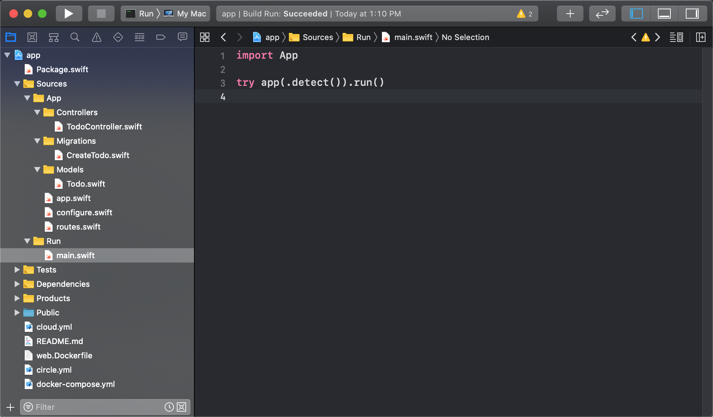

Hello World
本章教程教将带你创建第一个 Vapor 项目。
创建项目
通过 vapor 命令行工具创建项目，项目名称命名为 Vapor4Example。
vapor new Vapor4Example -branch=4
创建成功后，将输出如下信息。
Cloning Template [Done]
Updating Package Name [Done]
Initializing git repository [Done]
**
**~~**
**~~~~~~**
**~~~~~~~~~~**
**~~~~~~~~~~~~~~**
**~~~~~~~~~~~~~~~~~~**
**~~~~~~~~~~~~~~~~~~~~~~**
**~~~~~~~~~~~~~~~~~~~~~~~~**
**~~~~~~~~~~~~~~~~~~~~~~~~~~**
**~~~~~~~~~~~~~~~~~~~~~~~~~~~~**
**~~~~~~~~~~~~~~~~~~~~~~~~~~~~**
**~~~~~~~~~~~~~~~~~~~~~++++~~~**
**~~~~~~~~~~~~~~~~~~~++++~~~**
***~~~~~~~~~~~~~~~++++~~~***
****~~~~~~~~~~++++~~****
*****~~~~~~~~~*****
*************
_ __ ___ ___ ___
\ \ / / /\ | |_) / / \ | |_)
\_\/ /_/--\ |_| \_\_/ |_| \
a web framework for Swift
Project "Vapor4Example" has been created.
Type `cd Vapor4Example` to enter the project directory.
Use `vapor cloud deploy` to host your project for free!
Enjoy!
运行项目
此时，我们先不分析代码，先将该 vapor 项目 run 起来，看看最终效果。
步骤如下：
-
执行
cd Vapor4Example进入到刚创建好的项目目录中。 -
通过如下命令 build 项目代码。
vapor build
build 成功后将输出如下信息。
Building Project [Done]
- 通过如下命令 run 项目。
vapor run
这时候将输出如下信息。
Running app ...
[ NOTICE ] Server starting on http://127.0.0.1:8080
然后访问 http://127.0.0.1:8080 地址，如果返回 It works!，则意味着你的第一个 vapor 项目已经 run 成功了。
生成 Xcode 项目
执行 vapor xcode 命令，将会自动生成一个完整的 Xcode 项目。
$ vapor xcode
Generating Xcode Project [Done]
Select the `Run` scheme to run.
Open Xcode project?
y/n> y
Opening Xcode project...
可以选择 Xcode 中的 Run scheme 进行编译运行。
如图所示

目录结构
接下来将具体分析下项目目录结构，如下所示。
.
├── Public
├── Sources
│ ├── App
│ │ ├── Controllers
│ │ ├── Migrations
│ │ ├── Models
│ │ ├── app.swift
│ │ ├── configure.swift
│ │ └── routes.swift
│ └── Run
│ └── main.swift
├── Tests
│ └── AppTests
└── Package.swift
Public
TODO
Sources
该目录用于存放源代码。
App
TODO
Run
TODO
Tests
TODO
Package.swift
TODO